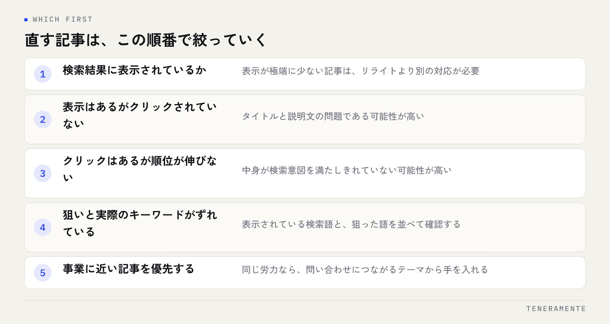

記事を増やしているのに問い合わせが増えない。そんなときに新しい記事を1本書くより先に手を入れるべきなのが、すでに公開した記事です。ブログ記事リライトのやり方で最初にやることは本文を書き直すことではなく、どの記事に手を入れるかを数字で決めることです。順番を間違えると、読まれていない記事をきれいにして終わります。
📌 この記事の結論
リライトは「あと一歩で上がる記事」から着手すると結果が出やすくなります。すでに検索結果に表示されていて、まだクリックされていない記事を探し、タイトルと冒頭、そして足りていない情報の順に直していきます。
01リライトとは、今の検索意図に合わせ直すこと
リライト（rewrite）は、公開済みの記事を今の検索意図に合わせて作り直す作業です。文章を美しくすることが目的ではありません。検索した人が知りたいことと、記事に書いてあることのずれを埋める作業だと考えてください。
記事が古くなる理由は3つあります。1つは情報そのものが変わること（仕様変更、価格改定、制度の変更）。2つめは検索する人の関心が変わること。3つめは、同じキーワードで後から公開された記事のほうが、より具体的に答えていることです。
このうち最も多いのは3つめです。公開時点では十分だった内容が、比較されると物足りなくなる。つまりリライトは記事の劣化を直す作業ではなく、今の検索結果の中での立ち位置を取り戻す作業になります。文章の質そのものが落ちたわけではないため、「書き直す」よりも「足す・差し替える」が中心になります。
02どの記事から直すかを決める
対象を選ぶ順番は次のとおりです。思いつきで選ばず、この並びで絞っていきます。

- 検索結果に表示されているかを確かめる。表示が極端に少ない記事はリライトより別の対応が必要です
- 表示されているのにクリックされていない記事を抜き出す。タイトルと説明文の問題である可能性が高い
- クリックされているのに順位が伸びない記事を抜き出す。中身が足りていない可能性が高い
- 狙ったキーワードと、実際に表示されているキーワードがずれている記事を確認する
- 事業に近い記事を優先する。同じ労力なら、問い合わせにつながるテーマから手を入れます
5番目を忘れないでください。数字だけで選ぶと、読まれているが仕事につながらない記事に時間を使うことになります。数字の確かめ方はSearch Consoleの使い方に整理しているので、画面の操作で迷う場合は先にそちらを読んでください。
2ページ目の記事が最初の候補になりやすい
掲載順位が2ページ目前後（おおよそ11〜20位）にある記事は、検索エンジンにテーマを認識されていながら上位の記事に及んでいない状態です。新しく書き起こすより、すでにある土台に足すほうが手数が少なくなります。逆に、ほとんど表示されていない記事はキーワードの選び方そのものを見直す段階で、リライトの対象ではありません。
03直す前に見る数字と、その読み方
見る数字は3つで足ります。表示回数、クリック率、掲載順位です。この3つの組み合わせで、直す場所が決まります。
| 数字の状態 | 考えられる原因 | 先に直す場所 |
|---|---|---|
| 表示は多い／クリックが少ない | タイトルと説明文が検索語と合っていない | タイトル・メタディスクリプション |
| クリックはある／順位が上がらない | 内容が検索意図を満たしきれていない | 本文の見出し構成と情報量 |
| 表示も少ない | キーワードの需要がない、または認識されていない | キーワード選定、内部リンク |
| 以前より順位が下がった | 情報が古い、または競合記事が充実した | 事実の更新と不足分の追記 |
注意したいのは、1記事の数字だけを見て判断しないことです。サイト全体で表示が落ちている時期なら、個別の記事の問題ではありません。比較するなら同じ期間の他の記事と並べて見ます。
もう1つ、計測期間を短く取りすぎないことも大切です。数日の変動で判断すると、たまたまの上下に振り回されます。月単位で前の期間と比べるくらいの粒度が扱いやすくなります。
04どこを直すか：直す場所の優先順位
手を入れる場所には効果の出やすい順番があります。上から順に見ていきます。
- タイトル：検索語を前半に入れ、記事で答えている範囲が分かる形にする。最も反応が変わりやすい箇所です
- メタディスクリプション：クリックするかどうかの判断材料。書き方はメタディスクリプションの書き方にまとめています
- 冒頭のリード文：検索した人が「ここに答えがある」と分かる1〜2文を先に置く
- 見出し構成：検索した人が順に知りたい並びになっているかを確認する
- 足りない情報：手順、判断基準、例外、よくある失敗。ここが差になります
- 内部リンク：関連する記事とつなぐ。内部リンクの貼り方の考え方に沿って整えます
全部をいちどに直す必要はありません。タイトルと冒頭だけを直して様子を見るのも有効な進め方です。同時に大きく変えると、何が効いたのか分からなくなります。
05本文の直し方：足す、削る、並べ替える
本文の作業は3種類に分けられます。この区別がつくと、手が止まりません。
足すのは、検索した人が次に知りたくなることです。手順を書いたら「つまずきやすい箇所」、考え方を書いたら「判断の基準」。実際に検索結果の上位に並ぶ記事を読み、自分の記事に書かれていない項目を書き出すのが早い方法です。
削るのは、本題に関係のない前置きと、同じことを言い換えている段落です。長い記事が強いわけではありません。読んでいる人が答えに届くまでの距離を短くします。
並べ替えるのは、結論と手順の位置です。知りたいことが後ろにある記事は、途中で離脱されます。結論を先に置き、理由と手順を後ろに回す構成に変えるだけで読まれ方が変わります。
URLと公開日の扱いに注意する
リライトのときにURLを変えると、それまでの評価が引き継がれません。どうしても変える場合はリダイレクトの設定が必要です。公開日についても、中身をほとんど変えていないのに日付だけを新しくするのは避けてください。更新したことを示したいなら、実際に加筆した内容とあわせて更新日を記載する形にします。
06やってはいけないリライト
次の4つは、手間をかけたのに評価が下がる原因になります。
- キーワードを本文に詰め込む：同じ語を不自然に繰り返しても順位は上がりません
- 他の記事と内容が重なる方向に広げる：自サイト内で同じキーワードを狙う記事が増えると、どちらも伸びにくくなります
- 数字や事例を足すために根拠のない内容を書く：具体性は必要ですが、確かめられない数字を入れてはいけません
- 全文を入れ替える：もとの記事で評価されていた箇所まで消えます。追記と差し替えが基本です
2つめは見落としやすい失敗です。リライトのつもりで内容を広げた結果、既存の別記事と同じテーマになることがあります。広げる前に、同じキーワードを狙った記事がサイト内にないかを確認してください。重なっているなら、片方に統合して一方からリンクを向けるほうが整います。
07リライト後に確認すること
公開したら、やりっぱなしにしないための確認を2段階で行います。
公開直後にやるのは技術的な確認です。表示が崩れていないか、内部リンクが切れていないか、Search Consoleでインデックスの登録をリクエストしたか。ここまでは当日に終わります。
その後は、変えた箇所に対応する数字だけを見ます。タイトルを直したならクリック率、内容を足したなら掲載順位と滞在の様子。変えていない箇所の数字で判断しないのが要点です。そして、結果が出るまでには時間がかかるため、数週間から1か月程度の間隔で見ます。
記録として残すのは、いつ・どの記事の・どこを・なぜ直したかの4点です。これがないと、次に同じ記事を見たときに前回の判断が分からず、同じ検討を繰り返します。サイト全体として作り直す段階に来ているかどうかの見極めはホームページリニューアルの時期の判断基準とあわせて考えると整理しやすくなります。
リライトはどのくらいの頻度で行えばよいですか？
記事を統合するか、別々に残すかはどう判断しますか？
リライトしても順位が変わりません。どこを見直せばよいですか？
08まとめ：新しく書く前に、あと一歩の記事を探す
ブログ記事リライトのやり方は、対象を数字で選び、直す場所を優先順位どおりに手当てし、変えた箇所に対応する数字で確かめる流れになります。本文を書き直すことから始めない、というのがいちばんの要点です。
そして、リライトは記事単位の作業に見えて、実はサイト全体の設計の問題でもあります。似たテーマの記事が重なっていないか、問い合わせにつながるページへ記事から導線があるか。ここが整っていないと、個別の記事をどれだけ直しても成果には届きません。
TENERAMENTEでは、既存記事の棚卸しから、どの記事を直しどの記事を統合するかの判断までをご一緒しています。サイト全体の構成から見直す場合はホームページ・LP制作のページをご覧いただき、どこから手を入れるべきか迷っている段階でもお問い合わせよりお気軽にご相談ください。